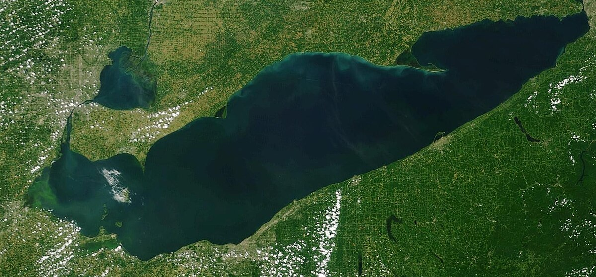

Lake Erie Analysis in Python
A team and I investigated how nutrient levels in the western basin of Lake Erie have changed over time and whether high nutrient levels correlate with known Harmful Algal Bloom (HAB) events by plotting, cross-examining, and researching physical implications of our data. There was a Kendal's Tau correlation coefficient of 0.44 (a strong relationship) between Total Phosphorous and Nitrtate Nitrite concentrations in the water.
- Technologies: Python, numpy, matplotlib, Data Analysis